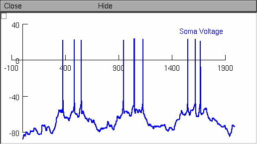

Reproduces all simulations from: Steephen, J. E. (2011). Excitability range of medium spiny neurons widens through the combined effects of inward rectifying potassium current inactivation and dopaminergic modulation. Neurocomputing, 74(18), 3884-3897. This implementation is by John Eric Steephen (john.steephen@duk.ac.in) and Mithun Padmakumar (mithun.padmakumar@duk.ac.in) to whom questions should be addressed. Usage: 1. Unzip MSN(DA)2011.zip into an empty directory. 2. Compile the mod files with mknrndll (or nrnivmodl in unix). 3. Double click on main.hoc (or drag and drop onto nrngui (MAC), or start with "nrngui main.hoc" (unix/linux)). 4. A window with the title Control Panel will appear with several controls, one of which will be the "Help" button. Click the "Help" button to see instructions on how to reproduce the simulations described in the paper. Example: Follow the instructions in the "Help" panel to recreate figure 1A(a) from the paper: 